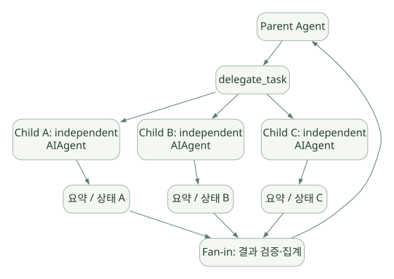

SECOND STUDY / 도구·권한·동시성
도구·권한·동시성
이번 단원의 읽는 관점
Registry·Inline·MCP·Plugin의 실행 위치를 나눕니다. 승인과 병렬 구간, Child Loop의 상태·권한·비용을 함께 읽습니다.
살펴볼 경계배리어·완료 순서·기록 순서와 Context·파일·Credential 격리를 따로 확인하세요.
이 페이지의 세부 목차
14. Subagent/Delegation: 별도 LLM Loop는 어떻게 실행되나?#
14.1 Subagent는 단순 함수 호출과 다르다#
Tool 병렬 호출은 기존 Agent가 Tool Handler 여러 개를 실행하는 것이다. 반면 Subagent는 하위 작업에 대해 별도의 AIAgent 인스턴스와 대화 Context, Tool Budget, 실행 수명주기를 만든다. 부모는 하위 Agent의 모든 중간 메시지를 자신의 Context에 넣지 않고 결과만 받도록 설계할 수 있다.
가로로 이동해서 읽을 수 있습니다. 도식 크게 보기 ↗

원문의 학습용 도식입니다. 연결 방향·분기 조건·점선·쌍방향 연결을 보존해 세로로 배치했습니다. 실제 구현·의사코드·해석의 구분은 본문을 함께 읽으세요.
도식 원문 보기 (Mermaid)
flowchart TD
P[Parent Agent] --> D[delegate_task]
D --> A[Child A: independent AIAgent]
D --> B[Child B: independent AIAgent]
D --> C[Child C: independent AIAgent]
A --> RA[요약 / 상태 A]
B --> RB[요약 / 상태 B]
C --> RC[요약 / 상태 C]
RA --> R[Fan-in: 결과 검증·집계]
RB --> R
RC --> R
R --> P문서: https://hermes-agent.nousresearch.com/docs/user-guide/features/delegation
14.2 코드 수준에서 무엇을 확인했나?#
[SRC] tools/delegate_tool.py의 모듈 설명은 Child AIAgent의 독립 대화, 독립 Task ID, 부모 Toolset을 기반으로 한 권한 축소, Goal/Context 중심 System Prompt를 설명한다. 실제 구현은 delegate_tool_child_run.py, delegate_tool_dispatch.py, delegate_tool_toolsets.py, delegate_tool_registry.py 등으로 나뉘어 있다.
코드: https://github.com/NousResearch/hermes-agent/blob/v0.22.5/tools/delegate_tool.py
코드: https://github.com/NousResearch/hermes-agent/blob/v0.22.5/tools/delegate_tool_child_run.py
코드: https://github.com/NousResearch/hermes-agent/blob/v0.22.5/tools/delegate_tool_dispatch.py
Parent → Child 계약#
| 구성요소 | Parent와 Child의 관계 |
|---|---|
| Goal / Context | Parent가 Task 범위를 정하여 Child에 제공 |
| Messages | Child 대화는 Parent History와 분리 |
| Toolset | Parent Toolset의 허용 범위에서 Child 차단 Tool을 제외 |
| System Prompt | 하위 목표에 맞게 새로 구성 |
| Budget | Child 반복 횟수/동시성/Timeout 등 별도 설정 가능 |
| 결과 | Parent에 요약/상태 또는 정형 출력 계약으로 반환 |
| Interruption | Child 관리/중단 경로와 Parent 권한 확인 필요 |
| Filesystem | 별도 Worktree는 설정·환경 조건에 따라 선택적으로 사용 |
14.3 병렬 Task Batch의 코드 동작 개념#
Parent delegate_task(tasks=[A, B, C])
-> Task 인자 정규화 및 할당량 검사
-> Child 설정/Model/Toolset/권한 구성
-> Child A, B, C의 독립 Loop 실행 (동시성 제한)
-> Child별 최종 상태·출력 검증
-> 완료 단위 결과 수집
-> Parent가 결과를 다음 의사결정에 활용[DOC] 기본 동시 Child 수는 10개로 소개돼 있으나 설정으로 조정할 수 있다. 별도의 Child Loop를 실행한다는 뜻이지 모델 API를 한꺼번에 무제한 요청해도 된다는 뜻이 아니다. Provider의 Rate Limit과 비용/Timeout이 실질적인 병목이 될 수 있다.
[DOC] 최신 문서는 Batch 위임에서 Background Handle을 사용하고, 기본적으로 완료 결과를 합쳐 돌려주는 경로와 independent_completions 선택 기능을 설명한다. 이 옵션은 Parent Prompt의 Tool Schema 및 캐시 경계에도 영향을 준다.
14.4 Structured Output 검증#
[DOC] Child Task에 output_schema 계약을 설정할 수 있고, Child 최종 결과의 JSON Schema 유효성을 검증할 수 있다. 실패하면 제한된 수정 Turn을 제공할 수 있으며, 끝까지 유효하지 않으면 내용을 버리는 대신 미검증 상태로 표시하는 동작이 문서화되어 있다.
이러한 결과 표시는 중요한 설계다. 'Child 완료'와 'Child 결과를 믿어도 됨'은 서로 다르다. 반드시 status, schema_valid, error, partial 같은 분리된 필드를 볼 수 있어야 한다.
14.5 Worktree와 Context 격리의 차이#
- Context 격리: Child가 별도 메시지와 모델 실행 상태를 갖는 것.
- Terminal Session 격리: Task ID, 프로세스 실행 공간 등이 구분되는 것.
- Filesystem 격리: Child가 독립 Worktree·컨테이너·디렉터리를 사용하는 것.
- Credential 격리: Child가 Parent보다 좁은 Secret/외부 API 접근을 갖는 것.
이 네 가지가 자동으로 모두 달성되는 것은 아니다. 특히 Context만 분리하고 Filesystem은 공유하면 두 Child가 같은 파일을 수정할 수 있다. 옵션 기반 Worktree 격리는 Git/Backend의 조건을 충족해야 하며, 모든 실행 환경에서 항상 활성화되는 보안 경계가 아니다.
14.6 Subagent가 유용한 조건과 오히려 나쁜 조건#
| 적합 | 부적합 / 주의 |
|---|---|
| 서로 독립된 조사·검토 작업 | 단일 조회 Tool 하나로 끝나는 일 |
| Child의 중간 Context가 매우 긴 일 | 작은 정형 변환만 필요한 일 |
| 역할별 독립적 판단이 필요한 일 | 동일 파일/DB 행에 동시 쓰기가 필요한 일 |
| 서로 다른 Toolset·모델을 적용할 일 | Human Approval이 매 단계 필요한 일 |
| 결과를 구조화해서 Fan-in하기 쉬운 일 | Child별 검증 불가능한 결론을 무조건 합치는 일 |
핵심 Trade-off: 병렬 Child는 Wall-clock을 단축할 여지가 있지만 Total Token Cost·공유 상태 충돌·결과 검증 복잡도를 증가시킨다. 'Multi-Agent가 Single Agent보다 항상 좋다'는 결론은 성립하지 않는다.
14.7 발표에서 구분할 4가지#
Parallel Tool Calls : Agent 1개 + 독립 Handler 여러 개
Subagent Delegation : Parent Agent + Child Agent(각자 모델 Loop)
Workflow Engine : 정해진 Graph/Step 기준으로 Agent/Tool 실행
Mixture of Agents : 여러 모델 결과를 참고해 합성하는 별도 추론 패턴이 네 구조는 겉보기에는 '여러 작업을 한다'는 공통점이 있지만 제어권 소유자, 상태 전달, 실패 처리, 비용이 다르다.